Exact screenshots from the interactive prototype. These screens use fictional in-memory records; shared cloud saving and payments are specified for future implementation.
Try the interactive studio → · Read the product specification →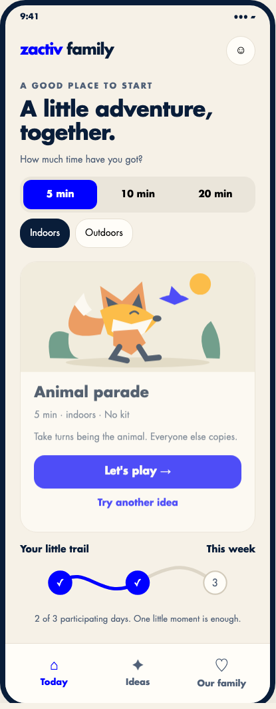
Time, setting, one idea and one clear start.
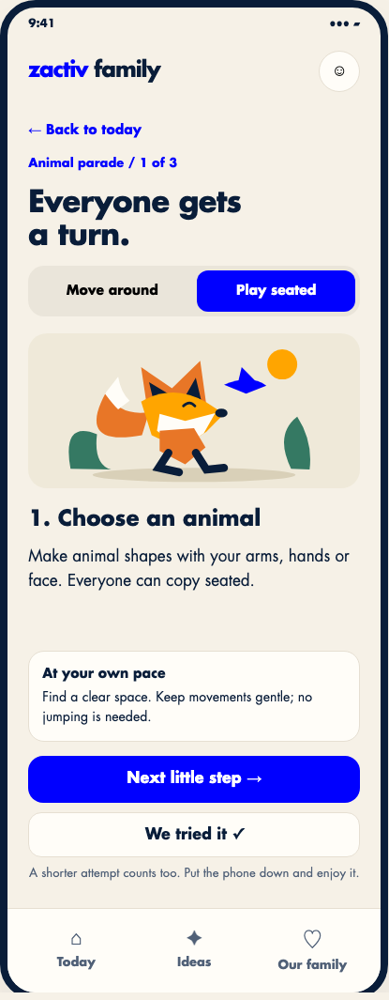
Three short steps, visible adaptations and early finish.
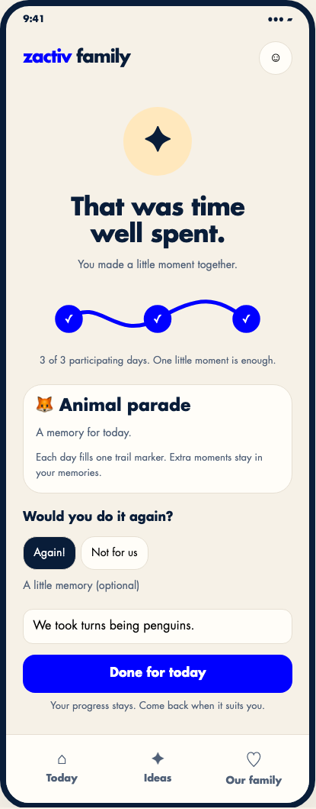
Shared progress and an optional memory. No pressure to do more.
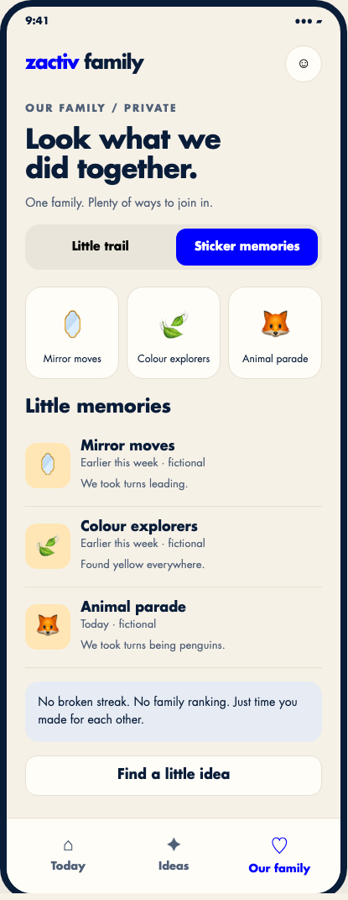
Alternative progress visual to test with families.
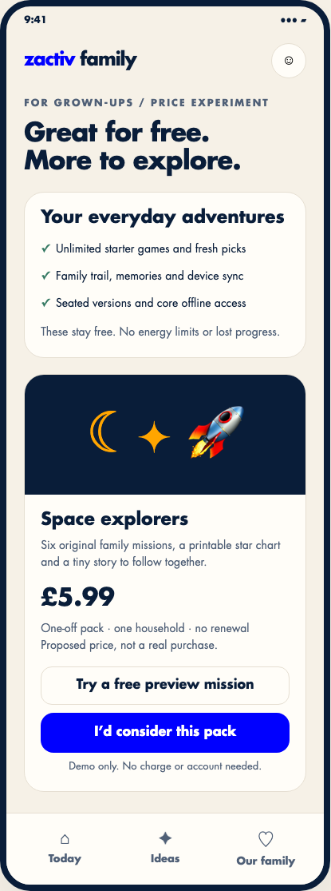
Sell authored depth to the adult; preserve everyday value.
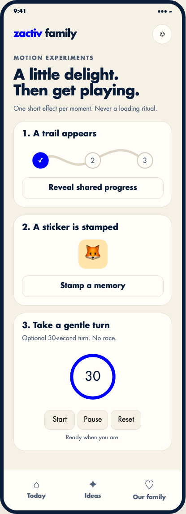
CSS entry, SVG trail, one-shot stamp and optional turn timer.
These are the current app's home, journal and family screens with fictional API responses, including a workout fixture drawn from the repository's E2E example. They do not show the live CMS catalogue or real family records.
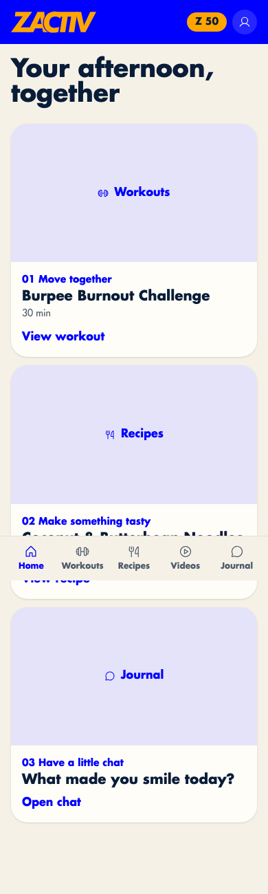
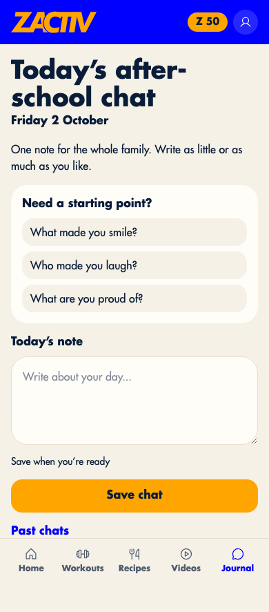
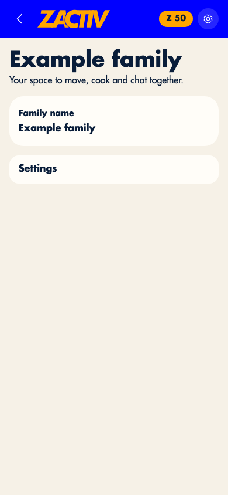
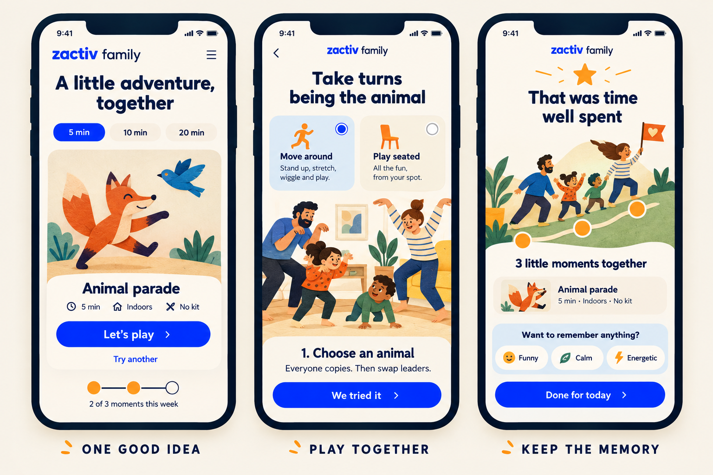
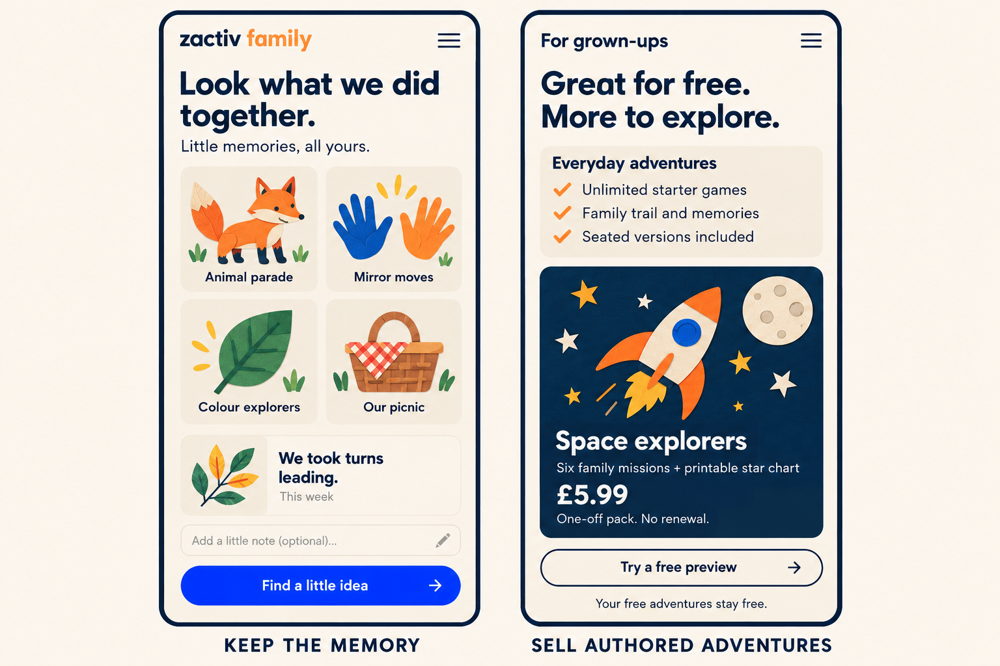
The illustration boards suggest art direction. The interactive screenshots above describe the implemented prototype.